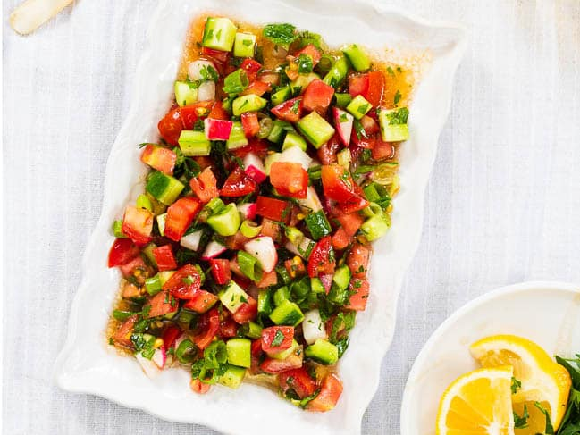

Çoban salatası (Shepherd's Salad ) 🇹🇷

Çoban salatası or choban salad (Turkish for "shepherd's salad") is a salad that originated from
Turkish cuisine and Azerbaijani cuisine consisting of finely chopped tomatoes (preferably peeled),
cucumbers, long green peppers, onion, and flat-leaf parsley.
The dressing consists of lemon juice, olive oil, and salt. It is a very popular summer dish
and is one of my favorite dishes. It can be eaten with almost any meal.
Ingredients (for 2-4 servings):
- 2 medium sized sun ripened tomatoes, roughly chopped
- 3 medium size Persian cucumbers, partly peeled and roughly chopped
- 50 g radishes or Turkish green peppers, roughly chopped
- 3 spring onions, thinly sliced
- a handful (10 g) flat-leaf parsley leaves, finely chopped
- a small handful (5 g) mint, finely chopped
- 2 Tbsp lemon juice
- 3 Tbsp extra virgin olive oil
- salt and pepper
Steps:
-
Chop your ingredients and transfer to a bowl.
-
Add salt and pepper to taste, as well as the lemon juice and olive oil. That's it! Mix and serve immediately.